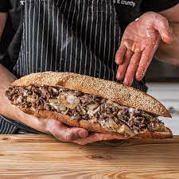

A Classic The Philly Cheese Steak

Enjoy a Philly staple at home with this fantastic recipe.It may take some time to
make but the wait will be worth for this savory Philly Cheese Steak
Ingredients
Hoagie Bread
- 1 cup (240ml) whole milk, 95F
- 2.5 teaspoons (8g) instant yeast
- 2.5 tablespoons (33g) granulated sugar
- 3 cups (450g) of all-purpose flour
- 1 teaspoon (3g) fine sea salt
- 2 whole eggs
- 1/4 cup (58g) unsalted butter, softened
- Untoasted sesame seeds for topping
Sandwhich Ingredients
- 2lbs (907g) chuck steak ¼” thick slices
- Vegetable oil
- 1 sweet onion, diced
- Salt and pepper
- 8 slices of provolone cheese
- 8 slices of white American cheese
- 1/2 (110g) cup mayo for spreading
- Hot sauce to serve
Instructions
Hoagie Bread:
- Pre-heat your oven to 375F and the two baking sheets with parchment paper.
- Whisk yeast and sugar into your milk, allow to sit for 5 min. To the bowl of a stand mixer add flour and salt, mix till combined. Fix your bowl to your stand mixer fitted with a dough hook. Begin mixing on low and add yeast mixture along with eggs. Mix for 3 minutes or till you get a moderately smooth dough. Add butter and mix till smooth, 2 - 3 minutes. Cover with plastic wrap.
- Form dough into a ball and rise at room temperature for 1 hour or till doubled.
- Punch dough down and divide into 6 even pieces about 145g each. Roll those into light balls, cover with a damp towel for 10 minutes.
- Roll balls into 7' logs and place onto your baking sheets, sprinkle each loaf with sesame seeds and optionally score the tops of the logs lengthwise in straight line. Bake in the oven for 15 - 17 minutes.
- Cool bread on a wire rack until room temperature. Store leftover bread wrapping them individually in plastic wrap.
Sandwhich:
- Place chuck steak in the freezer for 25 min. Next, slice your meat against the grain, no more than ¼”.
- Slice your hoagie in half, leaving the back part attached; spread mayo on both sides. (Optionally toast your hoagies if they are not fresh).
- Add enough oil to coat the bottom of a cast iron skillet or a flat top, heat over medium heat: once hot, add onion, and season with salt. Cook the onion until it begins to brown on the edges and soften.
- Move your onions to the side of the pan or remove them if there is no more space on the skillet. Next, add your steak; sear for 2 minutes by pressing on the heating surface or until it starts browning (Do it in batches if the skillet is not big enough until 2 pounds get cooked). Next, flip the meat, and using a wooden spatula, repeat on the other side, then mix with the onions.
- Cut your meat into smaller pieces using a wooden spatula. Gather ⅙ of your meat similar to the shape of the hoagie; add one slice of white American cheese and one slice of provolone on top of your meat. Melt the cheese with a kitchen torch or transfer to a baking sheet and place it under the broiler until the cheese melts.
- Once the cheese has melted, pick that up with a spatula, load up your sandwich, and enjoy.